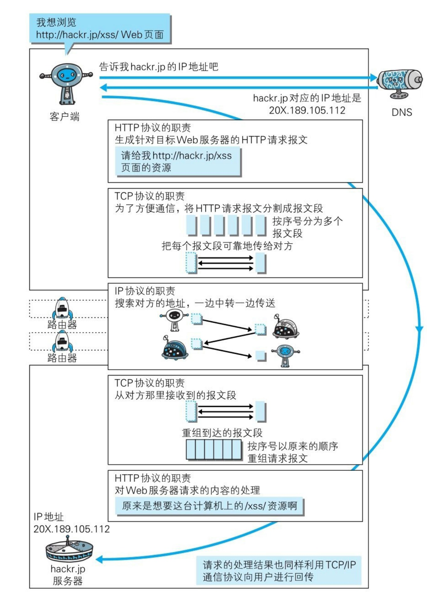
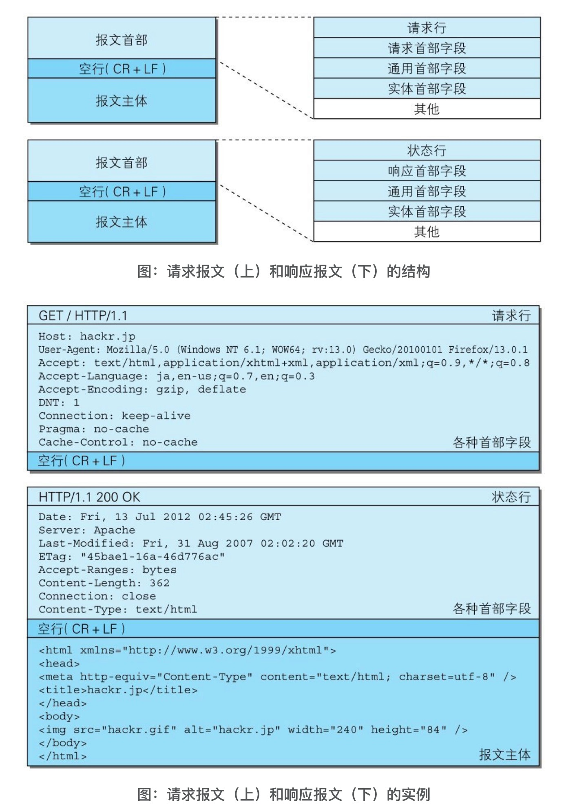

书籍链接：https://weread.qq.com/web/reader/3da32b505dd9f43da9a1acakc81322c012c81e728d9d180
1、基本概念

1.1 TCP/IP协议族
- 计算机两个网络实体之间需要相互通信，就必须基于相同的规则，这种规则称呼为协议
- TCP/IP协议族广义概念代表与互联网相关的所有协议
- TCP/IP协议可分层为应用层、传输层、网络层、链路层
- 应用层向用户提供应用服务的通信能力，例如HTTP，FTP，DNS
- 传输层提供两台计算机之间的数据传输（TCP和UDP）
- 网络层处理流动的数据包，定义了数据包通过怎样的路径在两台计算机间传输
- 链路层处理网络连接的硬件部分
- 在两个web应用交互信息的时候，请求方从上层到下层，每层都会封装新的首部信息，接收方从下层到上层一层层拆解最后得出原始信息
1.2 IP协议
IP协议位于网络层，指定了节点被分配到的地址。MAC地址是网卡所属的固定地址，一般不会变，可与IP地址进行配对。知道了对方的IP地址后，可以采用
ARP（Address Resolution Protocol）解析到对方的MAC地址。
1.3 TCP
TCP位于传输层，提供可靠的字节流服务。所谓的字节流服务（Byte Stream Service）是指，为了方便传输，将大块数据分割成以报文段（segment）为单位的数据包进行管理。而可靠的传输服务是指，能够把数据准确可靠地传给对方。一言以蔽之，TCP协议为了更容易传送大数据才把数据分割，而且TCP协议能够确认数据最终是否送达到对方。
1.4 DNS
DNS（Domain Name System）服务是和HTTP协议一样位于应用层的协议。它提供域名到IP地址之间的解析服务
1.5 URI和URL的区别
URI是Uniform Resource Identifier，URL是Uniform Resource Locator。
URI是一个，用于标记互联网资源的规则。URL是其中的一个实现方式。
不仅可以用URL的方式标记资源http://xxx.com/1123/aa.jpg,也可以用其他URI实现方式标记资源，例如http://1233456.jpg, URL方式更为通用和 使用广泛
2 HTTP是一个设计简单的协议
- http协议规定，两台设备一定有一台是客户端，一台是服务端
- http通过请求和相应交换数据
- HTTP是一种不保存状态，即无状态（stateless）协议。HTTP协议自身不对请求和响应之间的通信状态进行保存。也就是说在HTTP这个级别，协议对于发送过的请求或响应都不做持久化处理
- HTTP/1.1虽然是无状态协议，但为了实现期望的保持状态功能，于是引入了Cookie技术。有了Cookie再用HTTP协议通信，就可以管理状态了
HTTP方法：
- OPTIONS：查询服务端对指定URI的资源支持。服务端只会返回首部，不会返回报文实体
- CONNECT：要求用SSL/TLS等安全隧道协议链接代理
HTTP/1.1支持定义 keep-alive或connection reuse方法，进行持久链接。只要一端没有明确提出断开链接，则保持TCP链接状态
管线化：支持同时并行发送多个请求，不需要一个一个等待相应
Cookie：
Cookie会根据从服务器端发送的响应报文内的一个叫做Set-Cookie的首部字段信息，通知客户端保存Cookie。当下次客户端再往该服务器发送请求时，客户端会自动在请求报文中加入Cookie值（通常是一个用户唯一id）后发送出去。服务器端发现客户端发送过来的Cookie后，会去检查究竟是从哪一个客户端发来的连接请求，然后对比服务器上的记录，最后得到之前的状态信息。
3 HTTP报文结构
